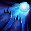

누누와 윌럼프가 굴릴수록 크기와 속도가 증가하는 눈덩이를 생성합니다.
눈덩이는 적에게 피해를 입히고 공중으로 띄워 올립니다.
눈덩이를 굴리는 동안 회전 속도가 느려지지만 계속 회전하면 회전 속도가 점점 증가합니다.
눈덩이가 챔피언이나 대형 몬스터, 벽에 충돌하면 마법 피해를 입히고
0.5~1.25초 동안 대상을 공중으로 띄워 올립니다.
피해량은 눈덩이를 굴린 거리에 비례합니다.

재사용하여 눈덩이를 일찍 굴려 보낼 수 있습니다.